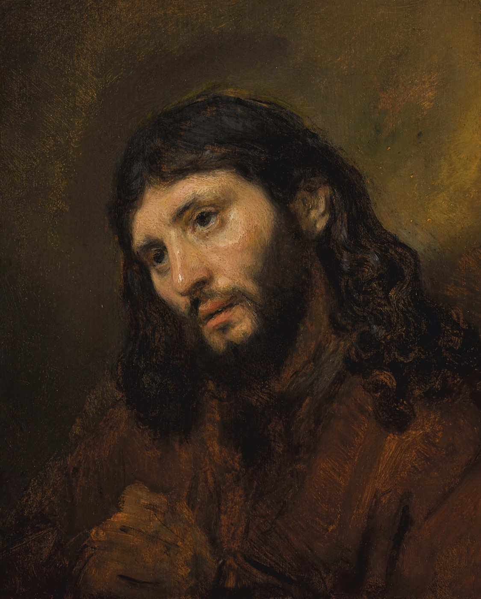

Живые фоны: от гор и звёзд до храма и Вифлеемской звезды
Шестнадцать сцен, которые тихо движутся, пока вы читаете: природа, храм, свечи, Христос на водах, Добрый Пастырь. Фон подбирается к теме стиха.

Бесплатно навсегда · без рекламы
Стихи Писания в привычном формате ленты. Листаешь вверх — и на каждом экране слово о главном: надежда, мир, любовь, сила.
Рембрандт ван Рейн. «Голова Христа», ок. 1648
Простое приложение, чтобы каждый день находить слово, которое отзывается.
Шестнадцать сцен, которые тихо движутся, пока вы читаете: природа, храм, свечи, Христос на водах, Добрый Пастырь. Фон подбирается к теме стиха.
Листаете, как привычную ленту — только вместо шума слово Божие.
Ставьте «нравится» — лента чаще покажет то, что откликается. Всё считается на телефоне.
66 книг. Из любого стиха — сразу в главу, чтобы прочитать в контексте.
Красивая карточка со стихом и пейзажем — в один тап.
Надежда · При тревоге · Мир и покой · Любовь · Сила · Утешение · Вера · Благодарность · Мудрость · Прощение · Молитва · Слова Христа
Добавляйте друзей по нику или ссылке и отправляйте стихи прямо в приложении — с парой слов от себя.
Не бойся, ибо Я с тобою; не смущайся, ибо Я Бог твой…
Исаия 41:10Без App Store. Появится иконка, и «Свиток» будет открываться как обычное приложение — на весь экран и без интернета.
Если ссылка открылась внутри Telegram или ВКонтакте — нажмите «Открыть в Safari» или скопируйте ссылку.
Квадрат со стрелкой вверх. В iOS 26 сначала нажмите «⋯» внизу справа.
Пролистайте меню вниз — пункт с плюсом в квадрате.
Готово! Откройте иконку «Свиток» на экране «Домой».
Или в Яндекс Браузере, Samsung Internet.
Три точки в правом верхнем углу.
Или «Добавить на главный экран». Иконка появится рядом с остальными приложениями.
Наведите камеру iPhone на QR-код, откройте ссылку в Safari и следуйте шагам для iPhone.
Или попробуйте прямо здесь, в браузере.
Да, навсегда. Без рекламы, подписок и платных функций. Слово Божие не должно стоить денег.
Публикация в App Store платная и сложная. Веб-приложение ставится на iPhone так же, как обычное: иконка на экране, запуск на весь экран, работа без интернета.
Синодальный перевод, канонические книги Ветхого и Нового Завета. Текст находится в общественном достоянии.
Да. После первого запуска лента и вся Библия сохраняются на телефоне.
Нет. Лента, Библия и избранное работают без входа. Аккаунт нужен только чтобы добавлять друзей и отправлять им стихи — войти можно через Telegram.
Без входа — никаких: лайки, избранное и место чтения остаются на вашем телефоне. Если вы вошли, на сервере хранятся только имя, ник, фото профиля (если загрузите), список друзей и стихи, которые вы отправили или получили. Рекламы и аналитики нет.
Один стих утром может задать тон всему дню.